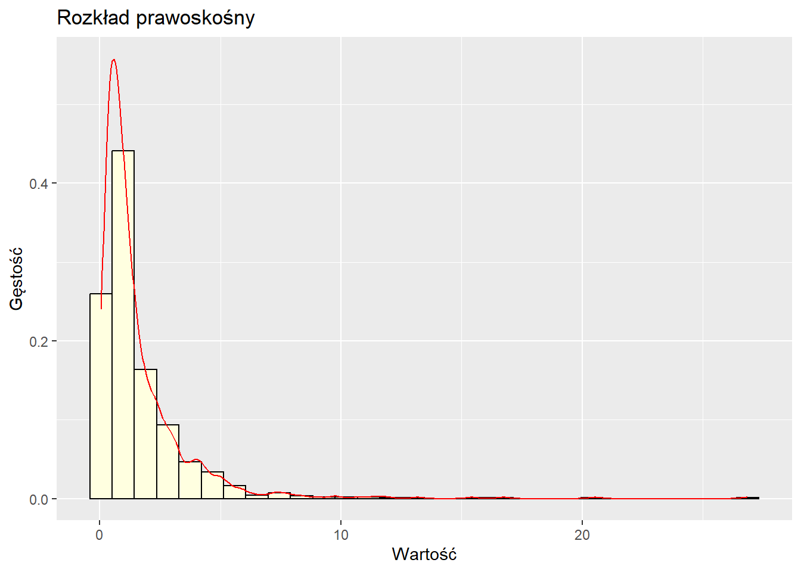
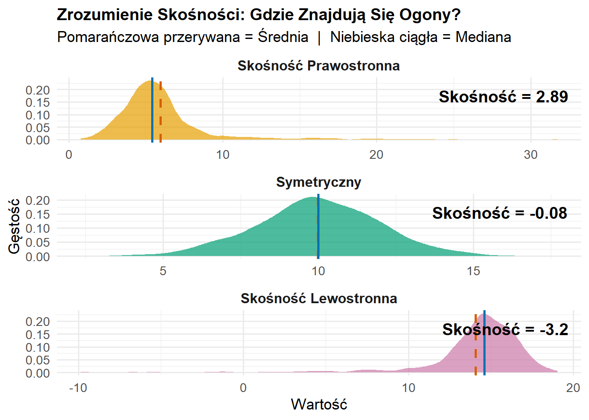

Statystyka opisowa jednej zmiennej (univariate descriptive statistics) pomaga nam podsumować i zrozumieć cechy pojedynczej zmiennej. Gdy zbieramy dane, często mamy wiele obserwacji, które są trudne do interpretacji bez jakiejś formy podsumowania. Statystyka opisowa pozwala nam:
Zidentyfikować “typową” lub “centralną” wartość w naszych danych
Zrozumieć, jak bardzo rozproszone lub zróżnicowane są dane
Wykryć nietypowe obserwacje (outliers)
Skutecznie komunikować wyniki innym
W tym rozdziale zbadamy fundamentalne narzędzia do opisywania danych numerycznych, zaczynając od podstawowej notacji i przechodząc przez miary tendencji centralnej, rozproszenia oraz techniki wizualizacji.
6.2 Przegląd: cztery typy miar opisowych
Statystykę opisową jednej zmiennej można podzielić na cztery główne kategorie, z których każda odpowiada na inne pytanie dotyczące naszych danych:
1. Miary tendencji centralnej (Measures of Central Tendency)
Pytanie: Jaka jest “typowa” lub “przeciętna” wartość?
Powszechne miary:
Średnia (mean) - średnia arytmetyczna
Mediana (median) - wartość środkowa
Moda (mode) - wartość najczęstsza
Cel: Te miary pomagają nam zidentyfikować, gdzie znajduje się “centrum” danych. Dostarczają pojedynczej wartości reprezentującej cały zbiór danych.
2. Miary zmienności (rozproszenia) (Measures of Variability/Dispersion)
Pytanie: Jak bardzo rozproszone są dane? Jak bardzo obserwacje różnią się od siebie?
Powszechne miary:
Rozstęp (range) - różnica między maksimum a minimum
Wariancja (variance) - średnie kwadratowe odchylenie od średniej
Odchylenie standardowe (standard deviation) - pierwiastek kwadratowy z wariancji
Cel: Te miary informują nas, czy obserwacje skupiają się blisko centrum, czy są szeroko rozproszone. Dwa zbiory danych mogą mieć tę samą średnią, ale bardzo różną zmienność.
3. Miary pozycji względnej (Measures of Relative Position/Standing)
Pytanie: Gdzie dana obserwacja znajduje się względem innych? Jaka proporcja danych znajduje się poniżej danej wartości?
Powszechne miary:
Kwantyle (quantiles) - pojęcie ogólne
Percentyle (percentiles) - dzielą dane na 100 części
Kwartyle (quartiles) - dzielą dane na 4 części
Wyniki znormalizowane (standardized scores, z-scores)
Cel: Te miary pomagają nam zrozumieć pozycję poszczególnych obserwacji w całym rozkładzie. Odpowiadają na pytania typu “Jak wynik tego studenta wypada w porównaniu z innymi?”
4. Miary kształtu rozkładu (Measures of Shape)
Pytanie: Jaka jest ogólna forma lub wzorzec rozkładu?
Powszechne miary:
Skośność (skewness) - asymetria, czy jest długi ogon po jednej stronie?
Kurtoza (kurtosis) - “ciężkość” ogonów, czy jest wiele wartości ekstremalnych?
Modalność (modality) - liczba szczytów (jednomodalny, dwumodalny, wielomodalny)
Cel: Te miary opisują ogólny wzorzec rozkładu. Choć nie będziemy ich obliczać numerycznie w tym kursie, będziemy identyfikować cechy kształtu wizualnie, używając histogramów i wykresów pudełkowych.
Związek między kategoriami:
Te cztery typy miar uzupełniają się wzajemnie. Kompletny opis danych jednej zmiennej zazwyczaj obejmuje:
Co najmniej jedną miarę tendencji centralnej (średnią lub medianę)
Co najmniej jedną miarę zmienności (odchylenie standardowe lub IQR)
Wizualizacje (histogram, wykres pudełkowy) pokazujące kształt
Informacje o pozycji względnej przy porównywaniu konkretnych obserwacji
W kolejnych sekcjach zbadamy każdą z tych kategorii szczegółowo, zaczynając od notacji matematycznej potrzebnej do precyzyjnego wyrażania tych pojęć.
6.3 Skale pomiarowe i odpowiednie statystyki
Zanim zagłębimy się w konkretne miary statystyczne, ważne jest zrozumienie, że nie wszystkie statystyki są odpowiednie dla wszystkich typów danych. Typ skali pomiarowej określa, które miary statystyczne możemy sensownie stosować.
Cztery skale pomiarowe
1. Skala nominalna (Nominal Scale)
Kategorie bez inherentnej kolejności (np. płeć, kraj, przynależność partyjna, kolor oczu).
Właściwości: Kategorie są różne, ale nie możemy powiedzieć, że jedna jest “większa” od drugiej.
2. Skala porządkowa (Ordinal Scale)
Kategorie z sensowną kolejnością, ale odstępy między kategoriami niekoniecznie są równe (np. poziom wykształcenia: podstawowe/średnie/licencjat/magisterium/doktorat; odpowiedzi w ankiecie: zdecydowanie się nie zgadzam/nie zgadzam/neutralny/zgadzam się/zdecydowanie się zgadzam).
Właściwości: Możemy uszeregować obserwacje, ale nie możemy skwantyfikować różnicy między rangami.
3. Skala interwałowa (Interval Scale)
Skala numeryczna z równymi odstępami, ale bez prawdziwego zera (np. temperatura w Celsjuszu lub Fahrenheita, lata kalendarzowe).
Właściwości: Różnice są znaczące (20°C do 30°C to taka sama zmiana jak 30°C do 40°C), ale stosunki nie (20°C nie jest “dwa razy cieplejsze” niż 10°C).
4. Skala ilorazowa (Ratio Scale)
Skala numeryczna z równymi odstępami I prawdziwym zerem (np. wzrost, waga, dochód, wiek, dystans).
Właściwości: Zarówno różnice, jak i stosunki są znaczące (20 kg jest dwa razy cięższe niż 10 kg).
Które statystyki dla których skal?
Miara
Nominalna
Porządkowa
Interwałowa
Ilorazowa
Moda
✓
✓
✓
✓
Mediana
✗
✓
✓
✓
Średnia
✗
✗
✓
✓
Rozstęp
✗
✗
✓
✓
Wariancja/Odch. stand.
✗
✗
✓
✓
IQR
✗
✓
✓
✓
Kwantyle/Percentyle
✗
✓
✓
✓
Kluczowe spostrzeżenia:
Dane nominalne: Tylko moda ma sens. Możemy liczyć częstości, ale nie możemy obliczać średnich czy median.
Dane porządkowe: Mediana i IQR są odpowiednie, ponieważ wymagają tylko uporządkowania. Średnia nie jest odpowiednia, bo zakłada równe odstępy.
Dane interwałowe/ilorazowe: Wszystkie miary są odpowiednie. To najbardziej elastyczne skale pomiarowe.
Przykład ilustrujący, dlaczego skala ma znaczenie:
Moda: Poprawna - “Większość respondentów ma licencjat”
Mediana: Poprawna - “Mediana poziomu wykształcenia to licencjat”
Średnia: Problematyczna - “Średni poziom wykształcenia to 3,2” jest trudna do interpretacji, ponieważ odstępy między poziomami nie są równe (różnica między podstawowym a średnim nie jest taka sama jak różnica między magisterium a doktoratem)
W tym rozdziale skupimy się głównie na danych interwałowych i ilorazowych, gdzie wszystkie miary statystyczne są odpowiednie. Należy jednak pamiętać o tych rozróżnieniach podczas pracy z różnymi typami danych w praktyce.
6.4 Notacja sigma
Zanim zagłębimy się w miary statystyczne, musimy zrozumieć notację sigma (sigma notation), która dostarcza zwartego sposobu wyrażania sumy wielu wartości.
Grecka litera \Sigma (duża sigma) oznacza “suma”. Gdy piszemy:
\sum_{i=1}^{n} x_i
Oznacza to: “Zsumuj wszystkie wartości x od pierwszej obserwacji (i=1) do ostatniej obserwacji (i=n).”
Rozbicie notacji:
\Sigma = operator sumowania (“zsumuj to”)
i=1 (poniżej \Sigma) = zacznij od pierwszej obserwacji
n (powyżej \Sigma) = kontynuuj do n-tej obserwacji
x_i = wartość zmiennej x dla obserwacji i
Przykład:
Załóżmy, że mamy pięć obserwacji: x_1 = 2, x_2 = 5, x_3 = 3, x_4 = 8, x_5 = 7
\sum_{i=1}^{n} c \cdot x_i = c \sum_{i=1}^{n} x_i \text{ (gdzie } c \text{ jest stałą)}
6.5 Rozkład danych i rozkład częstości
Czym jest rozkład danych?
Rozkład danych (data distribution) odnosi się do tego, jak wartości w zbiorze danych rozkładają się w możliwym zakresie wartości. Zrozumienie rozkładu pomaga nam zobaczyć wzorce, zidentyfikować typowe wartości i wykryć nietypowe obserwacje.
Gdy mówimy o rozkładzie, pytamy: “Jakie wartości występują w naszych danych i jak często pojawia się każda wartość (lub zakres wartości)?”
Normal (Bell Curve) shape: https://mathspace.co/textbooks/syllabuses/Syllabus-786/topics/Topic-12842/subtopics/Subtopic-171745/?activeTab=theory
Rozkład częstości
Rozkład częstości (frequency distribution) organizuje dane, pokazując, ile razy występuje każda wartość (lub zakres wartości). Może być przedstawiony jako:
Tabela pokazująca wartości i ich liczności
Rozkład częstości względnych (pokazujący proporcje lub procenty)
Częstość: Liczba studentów, którzy przeczytali daną liczbę książek
Częstość względna: Proporcja wszystkich studentów (np. 0,20 = 20% przeczytało 5 książek)
Częstość skumulowana: Suma narastająca (np. 10 studentów przeczytało 5 lub mniej książek)
library(ggplot2)library(patchwork)set.seed(123)# 1. UNIFORM DISTRIBUTIONuniform_data <-data.frame(x =runif(10000, min =0, max =100))p1 <-ggplot(uniform_data, aes(x = x)) +geom_histogram(bins =50, fill ="steelblue", alpha =0.7) +labs(title ="Uniform Distribution",subtitle ="Example: Lottery numbers, random assignment",x ="Value", y ="Frequency") +theme_minimal(base_size =12)# 2. NORMAL DISTRIBUTIONnormal_data <-data.frame(x =rnorm(10000, mean =100, sd =15))p2 <-ggplot(normal_data, aes(x = x)) +geom_histogram(bins =50, fill ="darkgreen", alpha =0.7) +labs(title ="Normal Distribution",subtitle ="Example: IQ scores (mean=100, sd=15)",x ="IQ Score", y ="Frequency") +theme_minimal(base_size =12)# 3. LOG-NORMAL DISTRIBUTIONlognormal_data <-data.frame(x =rlnorm(10000, meanlog =10.5, sdlog =0.5))p3 <-ggplot(lognormal_data, aes(x = x)) +geom_histogram(bins =50, fill ="darkred", alpha =0.7) +labs(title ="Log-Normal Distribution",subtitle ="Example: Income distribution",x ="Income (PLN)", y ="Frequency") +theme_minimal(base_size =12)# 4. EXPONENTIAL DISTRIBUTIONexponential_data <-data.frame(x =rexp(10000, rate =0.5))p4 <-ggplot(exponential_data, aes(x = x)) +geom_histogram(bins =50, fill ="purple", alpha =0.7) +labs(title ="Exponential Distribution",subtitle ="Example: Time between votes being cast at a polling station",x ="Time (minutes)", y ="Frequency") +theme_minimal(base_size =12)# 5. BIMODAL DISTRIBUTIONbimodal_data <-data.frame(x =c(rnorm(3000, mean =45, sd =8), # students who didn't study wellrnorm(7000, mean =75, sd =7)) # students who studied well)p5 <-ggplot(bimodal_data, aes(x = x)) +geom_histogram(bins =50, fill ="orange", alpha =0.7) +labs(title ="Bimodal Distribution",subtitle ="Example: Exam scores (two groups of students)",x ="Score (0-100)", y ="Frequency") +theme_minimal(base_size =12)# 6. BETA DISTRIBUTIONbeta_data <-data.frame(x =rbeta(10000, shape1 =5, shape2 =2) *100)p6 <-ggplot(beta_data, aes(x = x)) +geom_histogram(bins =50, fill ="navy", alpha =0.7) +labs(title ="Beta Distribution (Negatively Skewed)",subtitle ="Example: Exam scores (easier test)",x ="Score (0-100)", y ="Frequency") +theme_minimal(base_size =12)# Combine plots(p1 | p2) / (p3 | p4) / (p5 | p6)
Figure 6.1
6.6 Miary tendencji centralnej
Miary tendencji centralnej informują nas o “typowej” lub “centralnej” wartości w zbiorze danych. Trzy najpowszechniejsze miary to średnia, mediana i moda.
Prostym językiem: Średnia to wartość, którą otrzymalibyśmy, gdybyśmy mogli redystrybuować wszystkie wartości równo między wszystkie obserwacje. Jeśli pięciu studentów uzyskało łącznie 430 punktów, każdy otrzymałby 86 punktów, gdybyśmy podzielili sumę równo.
Średnia jako Punkt Równowagi
Jednym z najważniejszych sposobów pojęciowego zrozumienia średniej jest traktowanie jej jako punktu równowagi (balancing point) lub środka ciężkości (center of gravity) danych.
Wyobraźmy sobie umieszczenie ciężarków na huśtawce w pozycjach odpowiadających naszym wartościom danych. Średnia to punkt, w którym huśtawka byłaby idealnie wyważona.
Matematyczny wgląd:
Suma odchyleń od średniej zawsze równa się zeru:
\sum_{i=1}^{n} (x_i - \bar{x}) = 0
Oznacza to, że odchylenia dodatnie (wartości powyżej średniej) dokładnie znoszą odchylenia ujemne (wartości poniżej średniej).
Rozważmy zbiór danych X = \{1, 2, 6, 7, 9\} na osi liczbowej, wyobrażając sobie go jako huśtawkę:
Średnia (\mu) działa jako idealny punkt równowagi tej huśtawki. Dla naszych danych:
\mu = \frac{1 + 2 + 6 + 7 + 9}{5} = 5
Co dzieje się przy różnych punktach podparcia? 🤔
Przetestujmy trzy różne pozycje dla punktu oparcia (fulcrum), aby zrozumieć, dlaczego średnia jest wyjątkowa:
Punkt podparcia w 6 (za wysoko):
Wartości poniżej 6: 1, 2
Wartości powyżej 6: 7, 9
\sum odległości od wartości poniżej = (6-1) + (6-2) = 9
\sum odległości od wartości powyżej = (7-6) + (9-6) = 4
Huśtawka przechyla się w lewo! ⬅️ ponieważ 9 > 4
Punkt podparcia w 4 (za nisko):
Wartości poniżej 4: 1, 2
Wartości powyżej 4: 6, 7, 9
\sum odległości od wartości poniżej = (4-1) + (4-2) = 5
\sum odległości od wartości powyżej = (6-4) + (7-4) + (9-4) = 10
Huśtawka przechyla się w prawo! ➡️ ponieważ 5 < 10
Punkt podparcia w średniej (5) (idealna równowaga):
Wartości poniżej 5: 1, 2
Wartości powyżej 5: 6, 7, 9
\sum odległości poniżej = (5-1) + (5-2) = 7
\sum odległości powyżej = (6-5) + (7-5) + (9-5) = 7
7 = 7 ✨ Idealna równowaga!
To pokazuje, dlaczego średnia jest unikalnym punktem równowagi, gdzie:
\sum_{i=1}^n (x_i - \mu) = 0
Huśtawka zawsze będzie się przechylać, chyba że punkt podparcia zostanie umieszczony dokładnie w średniej! 🎪
Ta wizualizacja pokazuje, jak średnia arytmetyczna (5) działa jako punkt równowagi dla naszego zbioru danych {1, 2, 6, 7, 9}:
Lewa strona średniej:
Punkty o wartościach 1 i 2
Blisko siebie (różnica 1 jednostki)
Odległości od średniej: 4 i 3 jednostki
Suma “siły ciągnięcia” = 7 jednostek
Prawa strona średniej:
Punkty o wartościach 6, 7 i 9
Bardziej rozproszone (różnice 1 i 2 jednostek)
Odległości od średniej: 1, 2 i 4 jednostki
Suma “siły ciągnięcia” = 7 jednostek
Kluczowe obserwacje:
Średnia (5) jest punktem równowagi, mimo że:
Po lewej stronie są tylko 2 punkty (1, 2)
Po prawej stronie są 3 punkty (6, 7, 9)
Zielone strzałki pokazują odległości od średniej
Równowaga jest zachowana, ponieważ:
Suma odległości się równoważy: (5-1) + (5-2) = (6-5) + (7-5) + (9-5)
Całkowita suma odległości = 7 jednostek po każdej stronie
Liczba punktów nie ma znaczenia—liczy się tylko całkowita odległość!

Średnia Arytmetyczna Ważona
W wielu sytuacjach pracujemy z rozkładami częstości, w których wartości występują wielokrotnie. Zamiast wypisywać każdą wartość osobno, możemy użyć średniej ważonej, która uwzględnia, jak często każda wartość występuje.
Dla Częstości Bezwzględnych:
Gdy mamy rozkład częstości z wartościami x_1, x_2, \ldots, x_k występującymi odpowiednio f_1, f_2, \ldots, f_k razy (gdzie n = \sum_{i=1}^{k} f_i), średnia ważona wynosi:
Obie metody dają ten sam wynik: studenci uczą się średnio 12 godzin tygodniowo.
Prościej mówiąc: Gdy niektóre wartości występują częściej niż inne, “ważymy” je według tego, jak często się pojawiają. Wartość, która występuje 8 razy, wnosi do średniej 8 razy więcej niż wartość, która występuje raz.
Inne Rodzaje Średnich: Geometryczna i Harmoniczna
Choć średnia arytmetyczna jest zdecydowanie najczęściej używaną miarą tendencji centralnej w naukach społecznych, istnieją dwa inne rodzaje średnich do specjalnych zastosowań:
Przykład: Średnia prędkość, gdy odległości są równe, ale czasy różne
Ważne: Wszystkie wartości muszą być różne od zera
Ważna zależność: Dla dowolnego zbioru danych z wartościami dodatnimi: \bar{x}_H \leq \bar{x}_G \leq \bar{x} (harmoniczna ≤ geometryczna ≤ arytmetyczna)
W większości zastosowań w naukach społecznych te alternatywne średnie są rzadko potrzebne. Trzymaj się średniej arytmetycznej, chyba że masz konkretny powód teoretyczny, by użyć innego rodzaju.
Mediana
Mediana (median) to wartość środkowa, gdy dane są uporządkowane. Mediana jest wartością środkową, która dzieli uporządkowane dane na dwie grupy o równej liczebności, przy czym sama mediana nie jest wliczana do żadnej z grup, gdy n jest nieparzyste.
Stosowna dla: Danych porządkowych, interwałowych i ilorazowych (wymaga uporządkowania)
Jak znaleźć medianę:
Uporządkuj dane od najmniejszej do największej
Jeśli n jest nieparzyste: mediana to wartość środkowa na pozycji \frac{n+1}{2}
Jeśli n jest parzyste: mediana to średnia z dwóch wartości środkowych na pozycjach \frac{n}{2} i \frac{n}{2} + 1
Dwie wartości środkowe są na pozycjach 3 i 4: 8 i 12
\text{Mediana} = \frac{8 + 12}{2} = 10
Prostym językiem: Mediana to wartość, która znajduje się pośrodku, gdy ustawimy wszystkie obserwacje od najmniejszej do największej. Połowa obserwacji jest mniejsza od mediany, a połowa większa.
Kluczowa zaleta: Mediana jest odporna na wartości odstające (resistant to outliers). Wartości ekstremalne nie wpływają na nią znacząco, co czyni ją użyteczną, gdy dane zawierają wartości odstające.
Moda
Moda (mode) to wartość, która pojawia się najczęściej w zbiorze danych.
Stosowna dla: Danych nominalnych, porządkowych, interwałowych i ilorazowych (wszystkie skale)
Właściwości:
Zbiór danych może nie mieć mody (wszystkie wartości występują równie często)
Zbiór danych może mieć jedną modę (jednomodalny)
Zbiór danych może mieć wiele mod (dwumodalny, wielomodalny)
Przykład:
Dane: 2, 3, 3, 5, 5, 5, 7, 8, 8
Moda = 5 (występuje trzy razy, więcej niż jakakolwiek inna wartość)
Prostym językiem: Moda informuje nas, która wartość jest najczęstsza lub najbardziej typowa w zbiorze danych. Jest szczególnie użyteczna dla danych kategorycznych (np. “niebieski” to najczęstszy kolor oczu w próbie).
Porównanie średniej, mediany i modalnej
# Generowanie rozkładówset.seed(42)left_skew <-rbeta(2000, 8, 2) *50+30symmetric <-rnorm(2000, 55, 8)right_skew <-rbeta(2000, 2, 8) *50+30# Funkcja do estymacji modalnej przy użyciu gęstościget_mode <-function(x) { d <-density(x) d$x[which.max(d$y)]}# Układ pionowypar(mfrow =c(3, 1), mar =c(4, 4, 3, 1))# Skośność lewostronnahist(left_skew, main ="Rozkład lewostronnie skośny", xlab ="Wartość", col ="lightblue", breaks =30, xlim =c(25, 85))abline(v =mean(left_skew), col ="red", lwd =2.5, lty =1)abline(v =median(left_skew), col ="blue", lwd =2.5, lty =2)abline(v =get_mode(left_skew), col ="darkgreen", lwd =2.5, lty =3)legend("topleft", legend =c(sprintf("Średnia (%.1f)", mean(left_skew)),sprintf("Mediana (%.1f)", median(left_skew)),sprintf("Modalna (%.1f)", get_mode(left_skew))),col =c("red", "blue", "darkgreen"), lty =c(1, 2, 3), lwd =2.5, cex =0.9)# Rozkład symetrycznyhist(symmetric, main ="Rozkład symetryczny", xlab ="Wartość", col ="lightgreen", breaks =30,xlim =c(25, 85))abline(v =mean(symmetric), col ="red", lwd =2.5, lty =1)abline(v =median(symmetric), col ="blue", lwd =2.5, lty =2)abline(v =get_mode(symmetric), col ="darkgreen", lwd =2.5, lty =3)legend("topleft", legend =c(sprintf("Średnia (%.1f)", mean(symmetric)),sprintf("Mediana (%.1f)", median(symmetric)),sprintf("Modalna (%.1f)", get_mode(symmetric))),col =c("red", "blue", "darkgreen"), lty =c(1, 2, 3), lwd =2.5, cex =0.9)# Skośność prawostronnahist(right_skew, main ="Rozkład prawostronnie skośny", xlab ="Wartość", col ="lightyellow", breaks =30,xlim =c(25, 85))abline(v =mean(right_skew), col ="red", lwd =2.5, lty =1)abline(v =median(right_skew), col ="blue", lwd =2.5, lty =2)abline(v =get_mode(right_skew), col ="darkgreen", lwd =2.5, lty =3)legend("topright", legend =c(sprintf("Średnia (%.1f)", mean(right_skew)),sprintf("Mediana (%.1f)", median(right_skew)),sprintf("Modalna (%.1f)", get_mode(right_skew))),col =c("red", "blue", "darkgreen"), lty =c(1, 2, 3), lwd =2.5, cex =0.9)
Kluczowe wnioski:
W rozkładach symetrycznych średnia ≈ mediana ≈ modalna
W rozkładach prawostronnie skośnych (długi ogon po prawej), średnia > mediana > modalna
W rozkładach lewostronnie skośnych (długi ogon po lewej), średnia < mediana < modalna
Średnia jest przesuwana w kierunku ogona, mediana pozostaje w środku, a modalna znajduje się w szczycie rozkładu.
6.7 Miary Zmienności (Rozproszenia) / Measures of Dispersion (Variability)
Podczas gdy miary tendencji centralnej (measures of central tendency) informują nas o typowych wartościach, miary zmienności (measures of dispersion/variability) pokazują, jak bardzo dane są rozproszone. Dwa zbiory danych mogą mieć tę samą średnią, ale bardzo różne rozproszenie.
Prostym językiem: Rozstęp mówi nam o zakresie od najmniejszej do największej obserwacji. Daje szybkie wyobrażenie o rozproszeniu, ale jest bardzo wrażliwy na wartości odstające (outliers) (ponieważ wykorzystuje tylko dwie wartości).
Wariancja i odchylenie standardowe
Wizualizacja zmienności: przykład roboczy
Aby zrozumieć wariancję i odchylenie standardowe, przeanalizujmy kompletny przykład z danymi X = (2, 2, 3, 4, 5, 5). Potraktujemy je jako sekwencyjne obserwacje (np. pomiary w czasie), aby zwizualizować, jak poszczególne wartości odchylają się od swojej średniej.
X <-c(2, 2, 3, 4, 5, 5)mean_X <-mean(X)plot(X, type ="b", pch =19, col ="darkblue", xlab ="Obserwacja", ylab ="Wartość",main ="Odchylenia od średniej",ylim =c(0, 6))abline(h = mean_X, col ="red", lwd =2, lty =2)text(1, mean_X +0.3, paste("Średnia =", mean_X), col ="red", pos =4)# Dodaj linie odchyleńfor(i in1:length(X)) {segments(i, mean_X, i, X[i], col ="gray", lty =3)}
Szare przerywane linie pokazują odchylenia od średniej. Wariancja będzie kwantyfikować średnią kwadratową długość tych odchyleń.
Dlaczego podnosimy odchylenia do kwadratu?
Dlaczego nie uśrednić po prostu odchyleń (x_i - \bar{x}) bezpośrednio?
Problem: Jeśli po prostu uśrednimy odchylenia, zawsze będą one sumować się do zera (jak widzieliśmy przy właściwości punktu równowagi). Sprawdźmy to na naszym przykładzie:
x_i
x_i - \bar{x}
2
-1.5
2
-1.5
3
-0.5
4
0.5
5
1.5
5
1.5
Suma
0.0
Dzieje się tak, ponieważ odchylenia dodatnie (powyżej średniej) dokładnie znoszą odchylenia ujemne (poniżej średniej):
\sum_{i=1}^{n}(x_i - \bar{x}) = 0
Rozwiązania tego problemu:
Podnieść odchylenia do kwadratu (podejście wariancji): (x_i - \bar{x})^2 sprawia, że wszystkie wartości są dodatnie
Wziąć wartości bezwzględne (alternatywne podejście): |x_i - \bar{x}| również sprawia, że wszystkie wartości są dodatnie
Dlaczego podnoszenie do kwadratu jest preferowane:
Wygoda matematyczna: Podnoszenie do kwadratu ma lepsze właściwości matematyczne dla teorii statystyki
Podkreśla większe odchylenia: Podnoszenie do kwadratu nadaje większą wagę ekstremalnym odchyleniom (punkt oddalony o 10 jednostek wnosi 100 do wariancji, podczas gdy punkt oddalony o 5 jednostek wnosi tylko 25)
Problem jednostek: Ponieważ podnieśliśmy odchylenia do kwadratu, wariancja jest w jednostkach kwadratowych. Jeśli nasze dane są w centymetrach, wariancja jest w centymetrach kwadratowych. Dlatego często wolimy odchylenie standardowe.
Wariancja
Wariancja mierzy średnie kwadratowe odchylenie od średniej. Kwantyfikuje, jak daleko przeciętnie każda obserwacja znajduje się od średniej.
Zastosowanie: Dane interwałowe i ilorazowe
Obliczenia ręczne: wariancja populacji vs. wariancja próby
Kontynuujmy nasz przykład X = (2, 2, 3, 4, 5, 5) i obliczmy odchylenia kwadratowe:
x_i
x_i - \bar{x}
(x_i - \bar{x})^2
2
-1.5
2.25
2
-1.5
2.25
3
-0.5
0.25
4
0.5
0.25
5
1.5
2.25
5
1.5
2.25
Suma
9.5
Wariancja populacji (gdyby to była cała populacja):
Problem: Kiedy używamy danych z próby do oszacowania wariancji populacji, wzór \frac{\sum(x_i - \bar{x})^2}{n} ma tendencję do niedoszacowywania prawdziwej wariancji populacji. Dzieje się tak, ponieważ \bar{x} jest obliczane z tych samych danych, przez co odchylenia są sztucznie mniejsze (mierzymy odchylenia od średniej próby, a nie od prawdziwej średniej populacji).
Rozwiązanie: Korekta Bessela koryguje to obciążenie poprzez dzielenie przez n-1 zamiast przez n. Daje to nieobciążony estymator wariancji populacji.
# Wariancja próby (z korektą Bessela)# Uwaga: funkcja var() w R używa n-1 domyślnievar_sample <-var(X)cat("Wariancja próby:", var_sample, "\n")
Wariancja próby: 1.9
Kluczowa różnica: Wariancja próby (1.9) jest większa niż wariancja populacji (1.583), zapewniając nieobciążony estymator przy pracy z danymi z próby.
Prościej mówiąc: Wariancja mówi nam, jak daleko przeciętnie (w sensie kwadratowym) każda obserwacja znajduje się od średniej. Większa wariancja oznacza bardziej rozproszone dane; mniejsza wariancja oznacza, że dane skupiają się bardziej wokół średniej.
Uwaga: We wszystkich dalszych przykładach będziemy używać korekty Bessela (dzielenie przez n-1) do obliczania wariancji próby, ponieważ jest to standardowe podejście w statystyce inferencyjnej i odpowiada domyślnemu zachowaniu funkcji var() i sd() w R.
Odchylenie standardowe
Odchylenie standardowe to po prostu pierwiastek kwadratowy z wariancji. Zwraca nas do oryginalnych jednostek pomiaru.
Zastosowanie: Dane interwałowe i ilorazowe
Wzór
s = \sqrt{s^2} = \sqrt{\frac{1}{n-1}\sum_{i=1}^{n}(x_i - \bar{x})^2}
Obliczenia dla naszego przykładu
Dla naszego przykładuX = (2, 2, 3, 4, 5, 5):
s = \sqrt{1.9} \approx 1.378
# Odchylenie standardowe# Uwaga: funkcja sd() w R używa n-1 domyślniesd_sample <-sd(X)cat("Odchylenie standardowe próby:", sd_sample, "\n")
Odchylenie standardowe próby: 1.378
Prościej mówiąc: Odchylenie standardowe mówi nam o typowej odległości obserwacji od średniej, w oryginalnych jednostkach pomiaru. Jest bardziej interpretowalny niż wariancja, ponieważ jest w tych samych jednostkach co dane.
Uwaga W wielu rozkładach (szczególnie symetrycznych, dzwonowatych rozkładach takich jak rozkład normalny), około 68% obserwacji mieści się w obrębie jednego odchylenia standardowego od średniej, a około 95% w obrębie dwóch odchyleń standardowych.
Dla naszego przykładu z \bar{x} = 3.5 i s \approx 1.378:
Jedno OS poniżej średniej: 3.5 - 1.378 = 2.122
Jedno OS powyżej średniej: 3.5 + 1.378 = 4.878
Wartości w tym zakresie: 2, 2, 3, 4 (4 z 6 = 67%)
Przykład do ćwiczenia
Przeanalizujmy kolejny kompletny przykład, aby utrwalić te koncepcje.
Dane: 2, 4, 6, 8, 10
Krok 1: Oblicz średnią:
\bar{x} = \frac{2+4+6+8+10}{5} = \frac{30}{5} = 6
Krok 2: Oblicz odchylenia i odchylenia kwadratowe:
Zauważ: Ten zbiór danych ma większą wariancję (10 vs. 1.9) i odchylenie standardowe (3.16 vs. 1.38) niż nasz pierwszy przykład, co odzwierciedla fakt, że wartości są bardziej rozproszone wokół swojej średniej.
Rozstęp międzykwartylowy (IQR)
Rozstęp międzykwartylowy (interquartile range, IQR) mierzy rozrzut środkowych 50% danych. Oblicza się go jako:
Stosowny dla: Danych porządkowych, interwałowych i ilorazowych (wymaga uporządkowania)
\text{IQR} = Q_3 - Q_1
gdzie Q_1 to pierwszy kwartyl (25. percentyl), a Q_3 to trzeci kwartyl (75. percentyl).
Prostym językiem: IQR informuje nas o zakresie, który zawiera środkową połowę naszych danych. Jest odporny na wartości odstające, co czyni go użytecznym, gdy obecne są wartości ekstremalne.
Przykład:
Dane: 2, 4, 5, 7, 8, 11, 12, 15, 18, 20
Q_1 = 5 (25% danych znajduje się poniżej 5)
Q_3 = 15 (75% danych znajduje się poniżej 15)
\text{IQR} = 15 - 5 = 10
Środkowe 50% obserwacji rozciąga się na 10 jednostek.
6.8 Miary pozycji względnej
Miary pozycji względnej pomagają nam zrozumieć, gdzie dana obserwacja znajduje się w całym rozkładzie. Te miary odpowiadają na pytania typu “Jak ta wartość wypada w porównaniu z innymi w zbiorze danych?”
Kwantyl (quantile) to wartość, która dzieli zbiór danych na grupy równej wielkości. Bardziej formalnie, p-ty kwantyl to wartość, poniżej której znajduje się proporcja p danych.
Stosowny dla: Danych porządkowych, interwałowych i ilorazowych
Definicja:
Dla proporcji p (gdzie 0 < p < 1), p-ty kwantyl q_p spełnia:
Co najmniej proporcja p obserwacji jest mniejsza lub równa q_p
Co najmniej proporcja (1-p) obserwacji jest większa lub równa q_p
Prostym językiem: Kwantyle to “punkty odcięcia”, które dzielą nasze uporządkowane dane na segmenty. Informują nas o wartości, poniżej której znajduje się określona proporcja naszych danych.
Ważna uwaga: Kwantyle to pojęcie ogólne. Percentyle, kwartyle i mediana to wszystko konkretne typy kwantyli.
Przykłady kwantyli:
0,5 kwantyl (50. percentyl) to mediana - połowa danych znajduje się poniżej niej
0,25 kwantyl (25. percentyl) to pierwszy kwartyl (Q_1)
0,75 kwantyl (75. percentyl) to trzeci kwartyl (Q_3)
0,90 kwantyl (90. percentyl) oznacza, że 90% danych znajduje się poniżej tej wartości
Percentyle
Percentyl (percentile) to konkretny typ kwantyla, który dzieli dane na 100 równych części. k-ty percentyl to wartość, poniżej której znajduje się k procent obserwacji.
Stosowny dla: Danych porządkowych, interwałowych i ilorazowych
Związek z kwantylami:
k-ty percentyl odpowiada \frac{k}{100} kwantylowi. Na przykład:
percentyl = 0,25 kwantyl
percentyl = 0,50 kwantyl = mediana
percentyl = 0,90 kwantyl
Przykłady:
50. percentyl to mediana (50% danych znajduje się poniżej niej)
90. percentyl oznacza, że 90% obserwacji znajduje się poniżej tej wartości
10. percentyl oznacza, że tylko 10% obserwacji znajduje się poniżej tej wartości
Interpretacja: Jeśli zdobyłeś 85. percentyl w teście, poradziłeś sobie lepiej niż 85% zdających.
Kwartyle
Kwartyle (quartiles) to konkretne kwantyle, które dzielą dane na cztery równe części. Są to 25., 50. i 75. percentyle:
Stosowne dla: Danych porządkowych, interwałowych i ilorazowych
Q_1 (Pierwszy kwartyl lub 25. percentyl): 25% danych znajduje się poniżej tej wartości
Q_2 (Drugi kwartyl lub 50. percentyl): Mediana - 50% znajduje się poniżej
Q_3 (Trzeci kwartyl lub 75. percentyl): 75% danych znajduje się poniżej tej wartości
Doane, D. P., & Seward, L. W. (2016). Applied statistics in business and economics. Mcgraw-Hill.
# Wizualizacja kwartyliset.seed(456)example_data <-sort(rnorm(100, 50, 10))par(mar =c(5, 4, 4, 2))plot(1:100, example_data, pch =19, cex =0.8, col ="gray40",xlab ="Obserwacja (uporządkowana)", ylab ="Wartość",main ="Kwartyle dzielą dane na cztery równe części")# Dodaj linie kwartyliabline(h =quantile(example_data, 0.25), col ="blue", lwd =2, lty =2)abline(h =quantile(example_data, 0.50), col ="red", lwd =2, lty =1)abline(h =quantile(example_data, 0.75), col ="blue", lwd =2, lty =2)# Dodaj zacienione regionyrect(0, min(example_data), 101, quantile(example_data, 0.25), col =rgb(0, 0, 1, 0.1), border =NA)rect(0, quantile(example_data, 0.25), 101, quantile(example_data, 0.50), col =rgb(0, 1, 0, 0.1), border =NA)rect(0, quantile(example_data, 0.50), 101, quantile(example_data, 0.75), col =rgb(1, 1, 0, 0.1), border =NA)rect(0, quantile(example_data, 0.75), 101, max(example_data), col =rgb(1, 0, 0, 0.1), border =NA)# Etykietytext(95, quantile(example_data, 0.25), "Q1 (25%)", pos =3, font =2)text(95, quantile(example_data, 0.50), "Q2 (50%)", pos =3, font =2)text(95, quantile(example_data, 0.75), "Q3 (75%)", pos =3, font =2)legend("topleft", legend =c("Każdy region zawiera 25% obserwacji"),bty ="n", cex =1.1)
Obliczanie kwartyli: metoda Tukeya
Istnieje kilka metod obliczania kwartyli. W tym kursie używamy metody Tukeya (Tukey method, zwanej również metodą zawiasów, hinges method):
Kroki:
Znajdź medianę całego zbioru danych
Wyklucz medianę, jeśli n jest nieparzyste
Q_1 = mediana dolnej połowy
Q_3 = mediana górnej połowy
Przykład z parzystym n:
Dane: 2, 4, 5, 7, 8, 10, 12, 15 (n = 8)
Pozycja mediany: między pozycjami 4 i 5 → Mediana = \frac{7+8}{2} = 7.5
Dolna połowa (z wyłączeniem mediany): 2, 4, 5, 7 → Q_1 = \frac{4+5}{2} = 4.5
Górna połowa (z wyłączeniem mediany): 10, 12, 15, 18 → Q_3 = \frac{12+15}{2} = 13.5
Uwaga: Funkcja R quantile() ma wiele metod. Metoda Tukeya odpowiada type = 2, podczas gdy domyślną w R jest type = 7.
6.9 Miary kształtu
Miary kształtu opisują ogólną formę lub wzorzec rozkładu. Chociaż zazwyczaj oceniamy kształt wizualnie za pomocą histogramów i wykresów pudełkowych, ważne jest zrozumienie kluczowych koncepcji.
Skośność (asymetria)
Skośność odnosi się do asymetrii rozkładu. Informuje nas, czy rozkład ma dłuższy ogon po jednej stronie.
Rodzaje skośności:
Symetryczny (brak skośności): Rozkład wygląda tak samo po obu stronach centrum. Średnia ≈ Mediana.
Prawostronnie skośny (skośność dodatnia): Długi ogon rozciąga się w prawo. Średnia > Mediana. Większość wartości skupia się po lewej stronie, a kilka dużych wartości rozciąga ogon.
Lewostronnie skośny (skośność ujemna): Długi ogon rozciąga się w lewo. Średnia < Mediana. Większość wartości skupia się po prawej stronie, a kilka małych wartości rozciąga ogon.
Prostym językiem: Skośność mówi nam, w którą stronę “wskazuje” ogon. Rozkłady dochodów są zazwyczaj prawostronnie skośne (większość ludzi zarabia umiarkowane dochody, ale kilka osób zarabia ekstremalnie wysokie dochody). Wyniki testów z łatwego egzaminu mogą być lewostronnie skośne (większość studentów osiąga wysokie wyniki, ale kilku osiąga bardzo niskie).
W rozkładach symetrycznych średnia ≈ mediana ≈ modalna
W rozkładach prawostronnie skośnych (długi ogon po prawej), średnia > mediana > modalna
W rozkładach lewostronnie skośnych (długi ogon po lewej), średnia < mediana < modalna
Średnia jest przesuwana w kierunku ogona, mediana pozostaje w środku, a modalna znajduje się w szczycie rozkładu.
Kurtoza (grubość “ogonów” rozkładu)
Kurtoza odnosi się do tego, czy rozkład ma ciężkie ogony (wiele wartości ekstremalnych) czy lekkie ogony (niewiele wartości ekstremalnych) w porównaniu z rozkładem normalnym.
Wysoka kurtoza: Ciężkie ogony z wieloma wartościami odstającymi; ostry szczyt w centrum
Niska kurtoza: Lekkie ogony z niewieloma wartościami odstającymi; bardziej spłaszczony szczyt
Prostym językiem: Kurtoza mówi nam, czy wartości ekstremalne są częste czy rzadkie w naszych danych. Zwroty finansowe często mają wysoką kurtozę - większość dni przynosi małe zmiany, ale okazjonalnie występują bardzo duże ruchy (krachy lub wzrosty na rynku).
Rozkłady o niskiej kurtozie mają mniej wartości ekstremalnych i bardziej spłaszczony szczyt
Rozkłady o wysokiej kurtozie mają więcej wartości ekstremalnych (ciężkie ogony) i ostrzejszy szczyt
Rozkład normalny służy jako punkt odniesienia dla porównań kurtozy
Modalność (liczba dominant)
Modalność (modality) odnosi się do liczby wyraźnych szczytów lub “mod” w rozkładzie.
Typy:
Jednomodalny (unimodal): Jeden wyraźny szczyt
Dwumodalny (bimodal): Dwa wyraźne szczyty
Wielomodalny (multimodal): Trzy lub więcej szczytów
Jednostajny (uniform): Brak szczytów; wszystkie wartości mniej więcej równie powszechne
Prostym językiem: Liczba szczytów może ujawnić ważne cechy danych. Rozkład dwumodalny może wskazywać dwie odrębne podgrupy (np. wzrost dorosłych może pokazywać szczyty dla mężczyzn i kobiet).
# Wizualizuj różne kształtyset.seed(789)par(mfrow =c(1, 3), mar =c(4, 4, 3, 1))# Jednomodalny symetrycznysymmetric_data <-rnorm(1000, 50, 10)hist(symmetric_data, breaks =30, main ="Jednomodalny symetryczny", xlab ="Wartość", col ="lightblue", probability =TRUE)lines(density(symmetric_data), col ="darkblue", lwd =2)# Skośny w prawoskewed_data <-rexp(1000, 1/20) +20hist(skewed_data, breaks =30, main ="Skośny w prawo (jednomodalny)", xlab ="Wartość", col ="lightgreen", probability =TRUE)lines(density(skewed_data), col ="darkgreen", lwd =2)# Dwumodalnybimodal_data <-c(rnorm(500, 30, 5), rnorm(500, 60, 5))hist(bimodal_data, breaks =30, main ="Dwumodalny", xlab ="Wartość", col ="lightyellow", probability =TRUE)lines(density(bimodal_data), col ="orange", lwd =2)
Ocena wizualna: Cechy kształtu identyfikujemy głównie przez:
Histogramy: Pokazują ogólną formę, liczbę szczytów i kierunek skośności
Wykresy pudełkowe: Ujawniają skośność przez długość wąsów i pozycję mediany
Wykresy gęstości: Gładkie krzywe, które podkreślają ogólny wzorzec
Histogram wyświetla rozkład częstości (frequency distribution) danych liczbowych poprzez podzielenie zakresu na przedziały (bins) i pokazanie liczby lub proporcji obserwacji w każdym przedziale.
Konstrukcja Histogramu
Kluczowe decyzje:
Liczba przedziałów: Zbyt mało przedziałów traci szczegóły; zbyt wiele przedziałów tworzy szum
Granice przedziałów: Czy przedziały powinny być [a, b) (zamknięte z lewej, otwarte z prawej) czy (a, b] (otwarte z lewej, zamknięte z prawej)?
Skala osi Y: Częstości (frequency), częstości względne (relative frequency) czy gęstość (density)?
Wybór Optymalnej Liczby Przedziałów
Kilka reguł pomaga określić odpowiednią liczbę przedziałów:
1. Reguła Sturgesa (Sturges’ Rule) (domyślna w R):
k = \lceil \log_2(n) + 1 \rceil
gdzie n to liczebność próby. Działa dobrze dla rozkładów symetrycznych i jednomodalnych.
gdzie IQR to rozstęp międzykwartylowy (interquartile range). Najbardziej odporna na wartości odstające; zalecana dla rozkładów skośnych (skewed distributions).
Histogram częstości (frequency histogram) pokazuje liczbę obserwacji w każdym przedziale. Oś Y reprezentuje liczbę obserwacji.
Oś Y: Liczba bezwzględna (częstość)
Stosujemy gdy: Chcemy zobaczyć surowe liczby
Ograniczenie: Trudno porównywać rozkłady o różnych liczebnościach próby
2. Histogram Częstości Względnych / Relative Frequency Histogram
Histogram częstości względnych (relative frequency histogram) pokazuje proporcję obserwacji w każdym przedziale. Wysokość każdego słupka reprezentuje ułamek całości.
Oś Y: Częstość względna (proporcja) = \frac{\text{liczba w przedziale}}{n}
Stosujemy gdy: Porównujemy rozkłady o różnych liczebnościach próby
Właściwość: Wszystkie wysokości słupków sumują się do 1.0
3. Histogram Gęstości / Density Histogram
Histogram gęstości (density histogram) dostosowuje się do szerokości przedziałów tak, że pole powierzchni (nie wysokość) każdego słupka reprezentuje proporcję obserwacji.
Oś Y: Gęstość (density) = \frac{\text{częstość względna}}{\text{szerokość przedziału}}
Stosujemy gdy: Przedziały mają różne szerokości lub gdy łączymy z funkcjami gęstości prawdopodobieństwa
Właściwość: Całkowite pole powierzchni pod wszystkimi słupkami równa się 1.0
Kluczowa różnica: W histogramie gęstości pole powierzchni każdego słupka równa się częstości względnej, podczas gdy wysokość to gęstość.
Przedział (7, 9]: zawiera 8 (liczba = 1, ponieważ 9 nie ma w danych)
Konwencja R: Funkcja hist() w R domyślnie używa przedziałów prawostronnych zamkniętych (tj. (a, b]). Można to zmienić argumentem right = FALSE, aby uzyskać przedziały prawostronne otwarte [a, b).
par(mfrow =c(1, 2), mar =c(4, 4, 3, 2))# Prawostronne zamknięte (domyślne)hist(sample_data, breaks =20, main ="Przedziały Prawostronne Zamknięte (a, b]", xlab ="Wartość", col ="lightblue", border ="black", right =TRUE)# Prawostronne otwartehist(sample_data, breaks =20, main ="Przedziały Prawostronne Otwarte [a, b)", xlab ="Wartość", col ="lightcoral", border ="black", right =FALSE)
Wpływ Liczby Przedziałów
par(mfrow =c(1, 3), mar =c(4, 4, 3, 2))# Różne liczby przedziałówhist(sample_data, breaks =10, main ="10 Przedziałów (Za mało?)", xlab ="Wartość", col ="lightblue", border ="black")hist(sample_data, breaks =20, main ="20 Przedziałów (Zrównoważone)", xlab ="Wartość", col ="lightgreen", border ="black")hist(sample_data, breaks =40, main ="40 Przedziałów (Za dużo?)", xlab ="Wartość", col ="lightyellow", border ="black")
Interpretacja:
10 przedziałów: Pokazuje ogólny kształt, ale może przegapić szczegóły (potencjalna bimodalność nie jest widoczna)
20 przedziałów: Równoważy szczegóły i przejrzystość; ujawnia strukturę bimodalną (bimodal)
40 przedziałów: Pokazuje więcej szczegółów, ale może uwypuklać losowy szum, utrudniając dostrzeżenie wzorców
Wartości odstające: Niezwykłe wartości oddzielone od głównego zbioru
Luki: Zakresy, gdzie nie ma żadnych danych
Ogólna rekomendacja: Zacznij od reguły Sturgesa lub Freedmana-Diaconisa, a następnie dostosuj w zależności od tego, jakie wzorce chcesz uwypuklić. Dla analizy eksploracyjnej wypróbuj kilka różnych liczb przedziałów.
6.11 Wizualizacja: wykresy pudełkowe Tukeya
Wykres pudełkowy Tukeya (Tukey boxplot, lub box-and-whisker plot) dostarcza wizualnego podsumowania rozkładu opartego na pięciu kluczowych wartościach: minimum, Q_1, mediana, Q_3 i maksimum. Identyfikuje również wartości odstające.
Każda obserwacja poniżej płotu dolnego lub powyżej płotu górnego jest klasyfikowana jako wartość odstająca (outlier).
Krok 4: Narysuj wykres pudełkowy
Pudełko (box): Rozciąga się od Q_1 do Q_3 (zawiera środkowe 50% danych)
Linia wewnątrz pudełka: Pokazuje medianę
Wąsy (whiskers): Rozciągają się do najbardziej ekstremalnych obserwacji niebędących wartościami odstającymi
Pojedyncze punkty: Zaznaczone dla każdej wartości odstającej
KRYTYCZNE ROZRÓŻNIENIE: Płoty vs. Wąsy
Płoty (fences): Teoretyczne granice używane do identyfikacji wartości odstających (niekoniecznie rysowane)
Wąsy (whiskers): Rozciągają się do rzeczywistych punktów danych w obrębie płotów
Powszechny błąd: Studenci często myślą, że wąsy rozciągają się do płotów. To niepoprawne! Wąsy rozciągają się tylko do najbardziej ekstremalnych rzeczywistych wartości danych, które znajdują się w granicach płotów.
Kluczowe spostrzeżenia z wykresów pudełkowych:
Symetria: Jeśli mediana jest wycentrowana w pudełku, a wąsy mają równą długość, rozkład jest w przybliżeniu symetryczny
Skośność: Jeśli mediana jest bliżej Q_1, a górny wąs jest dłuższy, rozkład jest skośny w prawo
Wartości odstające: Pojedyncze punkty poza wąsami wskazują nietypowe obserwacje
Porównanie: Wykresy pudełkowe obok siebie ułatwiają porównywanie rozkładów między grupami
Porównywanie wielu grup wykresami pudełkowymi
# Generuj dane dla trzech grupset.seed(9)group_a <-rnorm(50, 50, 10)group_b <-c(rnorm(45, 60, 8), c(30, 35, 85, 90, 95)) # Z wartościami odstającymigroup_c <-rexp(50, 1/20) +30# Skośny w prawo# Połącz w ramkę danychdata_compare <-data.frame(value =c(group_a, group_b, group_c),group =factor(rep(c("Grupa A\n(Symetryczny)", "Grupa B\n(Z wartościami odstającymi)", "Grupa C\n(Skośny w prawo)"), each =50)))boxplot(value ~ group, data = data_compare,main ="Porównanie rozkładów między grupami",ylab ="Wartość",col =c("#66C2A5", "#FC8D62", "#8DA0CB"),border ="black")grid(nx =NA, ny =NULL, col ="lightgray", lty ="dotted")
Interpretacja:
Grupa A: Rozkład symetryczny z medianą blisko centrum pudełka
Grupa B: Wyższe centrum z kilkoma wartościami odstającymi po obu końcach
Grupa C: Rozkład skośny w prawo (dłuższy górny wąs, mediana bliżej Q_1)
6.12 Podsumowanie: wybór odpowiedniej miary
Wybór odpowiednich statystyk opisowych zależy od cech danych:
Dla tendencji centralnej:
Średnia: Stosuj, gdy dane są symetryczne i bez ekstremalnych wartości odstających. Dostarcza najwięcej informacji, ale wrażliwa na ekstrema. Wymaga skali interwałowej lub ilorazowej.
Mediana: Stosuj, gdy dane są skośne lub zawierają wartości odstające. Bardziej odporna, ale odrzuca część informacji. Wymaga co najmniej skali porządkowej.
Moda: Stosuj dla danych kategorycznych lub gdy identyfikujesz najczęstszą wartość. Można używać z każdą skalą pomiarową.
Dla rozproszenia:
Odchylenie standardowe: Stosuj ze średnią dla symetrycznych danych bez wartości odstających. Najczęstsza i interpretatywna. Wymaga skali interwałowej lub ilorazowej.
IQR: Stosuj z medianą dla skośnych danych lub danych z wartościami odstającymi. Odporny na ekstrema. Wymaga co najmniej skali porządkowej.
Rozstęp: Szybka ocena, ale bardzo wrażliwy na wartości odstające. Stosuj ostrożnie. Wymaga skali interwałowej lub ilorazowej.
Dla pozycji względnej:
Kwantyle/Percentyle: Pomagają porównać poszczególne obserwacje z całym rozkładem. Wymaga co najmniej skali porządkowej.
Kwartyle: Dostarczają standardowych punktów odcięcia dzielących dane na cztery równe części. Wymaga co najmniej skali porządkowej.
Dla kształtu:
Inspekcja wizualna: Używaj histogramów do oceny symetrii, skośności i modalności
Wykresy pudełkowe: Skutecznie ujawniają skośność i identyfikują wartości odstające
Dla wizualizacji:
Histogramy: Pokazują pełny kształt rozkładu. Dobre do zrozumienia ogólnych wzorców.
Wykresy pudełkowe: Efektywne podsumowania do porównywania grup. Wyraźnie podkreślają wartości odstające i kwartyle.
Ogólna zasada: Zawsze raportuj wiele miar. Średnia i odchylenie standardowe opowiadają jedną historię; mediana i IQR opowiadają inną. Razem z wizualizacjami dostarczają pełnego obrazu danych. Zawsze rozważ skalę pomiarową danych przy wyborze statystyk do obliczenia.
6.13 Appendix A: Measures of Relative Position (Standing)
Understanding where values sit within a dataset is crucial for data analysis. Let’s explore these concepts step by step.
Quartiles (Q): The Basics
Think of quartiles as special numbers that split your ordered data into four equal parts.
Doane, D. P., & Seward, L. W. (2016). Applied statistics in business and economics. Mcgraw-Hill.
What Are Quartiles?
First Quartile (Q1):
Separates the lowest 25% of data from the rest
Also called the 25th percentile
Example: If Q1 = 50 in a test score dataset, 25% of students scored below 50
Second Quartile (Q2):
The median - splits data in half
Also called the 50th percentile
Example: If Q2 = 70, half the students scored below 70
Third Quartile (Q3):
Separates the highest 25% of data from the rest
Also called the 75th percentile
Example: If Q3 = 85, 75% of students scored below 85
How to Calculate Quartiles (Step by Step) - Two Methods
Let’s examine student test scores using both common quartile calculation methods:
Example 1: Odd Number Case (11 scores)
60, 65, 70, 72, 75, 78, 80, 82, 85, 88, 90
Step 1: Find Q2 (median) - Same for both methods
With n = 11 values (odd)
Median position = (n + 1)/2 = 6
Q2 = 78
Step 2: Find Q1
Tukey’s Method:
Look at lower half: 60, 65, 70, 72, 75
Q1 = median of lower half = 70
Interpolation Method:
Position = (n + 1)/4 = (11 + 1)/4 = 3
Q1 = 70 (3rd value)
Step 3: Find Q3
Tukey’s Method:
Look at upper half: 80, 82, 85, 88, 90
Q3 = median of upper half = 85
Interpolation Method:
Position = 3(n + 1)/4 = 3(12)/4 = 9
Q3 = 85 (9th value)
Example 2: Even Number Case (10 scores)
60, 65, 70, 72, 75, 78, 80, 82, 85, 90
Step 1: Find Q2 (median) - Same for both methods
With n = 10 values (even)
Median positions = 5 and 6
Q2 = (75 + 78)/2 = 76.5
Step 2: Find Q1
Tukey’s Method:
Look at lower half: 60, 65, 70, 72, 75
Q1 = median of lower half = 70
Interpolation Method:
Position = (10 + 1)/4 = 2.75
Q1 = 65 + 0.75(70 - 65) = 68.75
Step 3: Find Q3
Tukey’s Method:
Look at upper half: 78, 80, 82, 85, 90
Q3 = median of upper half = 82
Interpolation Method:
Position = 3(10 + 1)/4 = 8.25
Q3 = 82 + 0.25(85 - 82) = 82.75
Important Notes:
Tukey’s Method:
First find the median (Q2)
Split the data into lower and upper halves
Find Q1 as the median of the lower half
Find Q3 as the median of the upper half
When n is odd, the median is not included in either half
Interpolation Method:
Uses positions (n+1)/4 for Q1 and 3(n+1)/4 for Q3
When position falls between values, uses linear interpolation
Doesn’t require splitting data into halves
Both methods give the same results for simple positions (Example 1) but can differ when interpolation is needed (Example 2).
6.14 Appendix B: Manual Construction of Tukey Boxplot
Step 1: Calculate Key Components
Find quartiles: Q_1, Q_2 (median), Q_3
Calculate Interquartile Range: IQR = Q_3 - Q_1
Step 2: Determine Whisker Boundaries
Lower fence: Q_1 - 1.5 \times IQR
Upper fence: Q_3 + 1.5 \times IQR
Step 3: Identify Outliers Data points are outliers if they are:
Warning: The `size` argument of `element_line()` is deprecated as of ggplot2 3.4.0.
ℹ Please use the `linewidth` argument instead.
ℹ The deprecated feature was likely used in the ggpubr package.
Please report the issue at <https://github.com/kassambara/ggpubr/issues>.
Warning: The `size` argument of `element_rect()` is deprecated as of ggplot2 3.4.0.
ℹ Please use the `linewidth` argument instead.
ℹ The deprecated feature was likely used in the ggpubr package.
Please report the issue at <https://github.com/kassambara/ggpubr/issues>.
Figure 6.2: Box plots comparing height distributions between groups.
To complement our box plots, let’s also look at the density distributions:
# Create density plotsggplot(data = data_height_l) +geom_density(aes(x = height, fill = Group_number), alpha =0.5) +facet_grid(~ Group_number) +scale_x_continuous(breaks =seq(130, 210, 10)) +labs(title ="Height Density by Group",x ="Height (cm)",y ="Density")
Figure 6.3: Density plots showing the height distributions for each group.
Box Plot Interpretation Exercise
Based on the box plots and density plots above, determine whether each of the following statements is True or False. For each statement, provide a brief explanation based on evidence from the visualizations.
Exercise Questions
Students from group 2 (G2) in the studied sample are, on average, taller than those from group 1 (G1).
Group 1 (G1) height measurements are more dispersed/spread out than group 2 (G2).
The lowest person is in group 2 (G2).
Both data sets are negatively (left) skewed.
Half of the students in group 2 (G2) measure at least 175 cm.
Hints for Interpretation
When answering these questions, consider:
The position of the median line within each box
The relative sizes of the boxes (IQR)
The positions of the minimum and maximum values
The symmetry of the distributions (balanced or skewed)
The lengths of the whiskers
For each statement, determine whether it is True or False and provide your explanation:
Answer Template
Students from G2 are, on average, taller than G1: [True/False]
Explanation:
G1 height is more dispersed/spread out: [True/False]
Explanation:
The lowest person is in G2: [True/False]
Explanation:
Both data sets are negatively (left) skewed: [True/False]
Explanation:
Half of G2 measure at least 175 cm: [True/False]
Explanation:
Let’s review the answers to our box plot interpretation questions:
Solutions
Students from G2 are, on average, taller than G1: False
Explanation: The median height (middle line in the boxplot) for G1 is higher than G2.
G1 height is more dispersed/spread out: False
Explanation: G2 shows greater dispersion. This is visible in the boxplot where G2 has a larger interquartile range (IQR) of 17.5 cm compared to G1’s 9.5 cm. G2 also has a wider range from minimum to maximum values.
The lowest person is in G2: True
Explanation: The minimum value in G2 is 138 cm, which is lower than the minimum value in G1 (150 cm).
Both data sets are negatively (left) skewed: True
Explanation: In both groups, the median line is positioned toward the upper part of the box, and the lower whisker is longer than the upper whisker. This indicates that there’s a longer tail on the left side of the distribution, which means negative skewness.
Half of G2 measure at least 175 cm: True
Explanation: The median (middle line in the boxplot) for G2 is 175 cm, which means that 50% of the values are greater than or equal to 175 cm.
R Code Reference
Here’s the complete R code used in this section:
# Load required packageslibrary(tidyr)library(ggplot2)library(ggpubr)# Set display optionsoptions(scipen =999, digits =3)# Create the datasetdata_height <-data.frame(group_1 =c(150, 160, 165, 168, 172, 173, 175, 176, 177, 178, 179, 180, 180, 181, 181, 182, 182, 183, 183, 184, 186, 188, 190, 191, 200),group_2 =c(138, 140, 148, 152, 164, 164, 165, 165, 166, 166, 170, 175, 175, 175, 182, 182, 182, 182, 182, 182, 183, 183, 183, 188, 210))# Transform dataset from wide to long formatdata_height_l <-gather(data = data_height, key ="Group_number", value ="height", group_1:group_2)# Display the first few rowshead(data_height_l)# Calculate summary statistics for each groupgroup1_stats <-summary(data_height$group_1)group2_stats <-summary(data_height$group_2)# Calculate IQRgroup1_iqr <-IQR(data_height$group_1)group2_iqr <-IQR(data_height$group_2)# Create horizontal boxplotsggplot(data = data_height_l) +geom_boxplot(aes(x = Group_number, y = height, colour = Group_number), notch =FALSE) +coord_flip() +scale_y_continuous(breaks =seq(130, 210, 5)) +theme_pubr() +grids(linetype ="dashed") +labs(title ="Height Distribution by Group",x ="Group",y ="Height (cm)")# Create density plotsggplot(data = data_height_l) +geom_density(aes(x = height, fill = Group_number), alpha =0.5) +facet_grid(~ Group_number) +scale_x_continuous(breaks =seq(130, 210, 10)) +labs(title ="Height Density by Group",x ="Height (cm)",y ="Density")
6.15 Appendix C: Comparative Analysis Using Tukey Boxplots
library(tidyverse)library(gapminder)# Prepare data - exclude Oceania due to insufficient data (only 2 countries)data_2007 <- gapminder %>%filter(year ==2007, continent !="Oceania")
6.16 Understanding Tukey Boxplots
A Tukey boxplot displays five key statistics and identifies outliers:
Median (Q2): The middle line in the box (50th percentile)
First quartile (Q1): Bottom of the box (25th percentile)
Third quartile (Q3): Top of the box (75th percentile)
Interquartile Range (IQR): The height of the box = Q3 - Q1
Whiskers: Extend to the most extreme values within Q1 - 1.5 \times IQR (lower) and Q3 + 1.5 \times IQR (upper)
Outliers: Points beyond the whiskers (Tukey’s rule)
Key interpretation points:
The median shows central tendency (not the mean!)
The IQR shows the middle 50% of data
Longer boxes indicate more spread
Asymmetric boxes or whiskers indicate skewness
The whiskers show the range of “typical” values
ggplot(data_2007, aes(x =reorder(continent, lifeExp, FUN = median), y = lifeExp)) +geom_boxplot(fill ="lightblue", alpha =0.7, outlier.shape =21, outlier.fill ="red", outlier.size =3, width =0.6) +geom_jitter(width =0.15, alpha =0.3, color ="darkblue", size =2) +labs(title ="Life Expectancy by Continent (2007)",subtitle ="Boxplots show distribution; red circles indicate outliers by Tukey's rule\nNote: Oceania excluded due to insufficient data (only 2 countries)",x ="Continent (ordered by median)",y ="Life Expectancy (years)") +theme_minimal() +theme(plot.title =element_text(size =16, face ="bold"),axis.title =element_text(size =14),axis.text =element_text(size =12) ) +scale_y_continuous(breaks =seq(40, 85, by =5))
6.17 Part A: Basic Comparisons
Answer the following questions by examining the boxplot above.
True or False:
Europe has a higher median life expectancy than Africa.
Life expectancy is more dispersed in Africa than in Europe (compare the box heights).
Africa’s distribution is positively (right) skewed—the upper whisker is longer than the lower whisker.
Asia has outliers on both the low and high ends of the distribution.
The median life expectancy in Asia is lower than in the Americas.
Africa shows the largest interquartile range (IQR) among all continents.
6.18 Part B: Changes Over Time
time_comparison <- gapminder %>%filter(year %in%c(1957, 2007), continent !="Oceania") %>%mutate(year =factor(year))ggplot(time_comparison, aes(x = continent, y = lifeExp, fill = year)) +geom_boxplot(alpha =0.7, position =position_dodge(0.8), outlier.shape =21, outlier.size =2, width =0.7) +labs(title ="Life Expectancy: 1957 vs 2007",subtitle ="50-year comparison of distributions (Oceania excluded due to insufficient data)",x ="Continent",y ="Life Expectancy (years)",fill ="Year") +theme_minimal() +theme(plot.title =element_text(size =16, face ="bold"),legend.position ="top",axis.title =element_text(size =12),axis.text =element_text(size =11) ) +scale_fill_manual(values =c("1957"="#E78AC3", "2007"="#8DA0CB")) +scale_y_continuous(breaks =seq(30, 85, by =5))
True or False:
The median life expectancy increased in all continents between 1957 and 2007.
In 1957, Asia had a larger IQR than in 2007, indicating convergence (compare box heights).
The entire distribution of life expectancy in Europe in 2007 is higher than Africa’s entire distribution in 1957 (check if the boxes overlap at all).
Asia showed a larger increase in median life expectancy than the Americas between 1957 and 2007.
Summary Statistics for Life Expectancy by Continent (2007)
continent
n
median
q1
q3
iqr
min
max
lower_fence
upper_fence
n_outliers
Europe
30
78.6
75.0
79.8
4.8
71.8
81.8
67.9
87.0
0
Americas
25
72.9
71.8
76.4
4.6
60.9
80.7
64.8
83.3
1
Asia
33
72.4
65.5
75.6
10.2
43.8
82.6
50.3
90.9
1
Africa
52
52.9
47.8
59.4
11.6
39.6
76.4
30.4
76.9
0
Note: The lower and upper fences show the boundaries for Tukey’s outlier rule. Values beyond these fences are marked as outliers. Oceania is excluded from this analysis because it contains only 2 countries in the dataset, which is insufficient for meaningful distributional analysis using boxplots.
6.20 Thinking Questions
Why might Africa show more outliers than other continents? What could this tell us about within-continent variation?
If we wanted to compare “average” life expectancy between continents, should we use the mean or median? Why might these differ, especially for Africa?
Looking at the 1957 vs 2007 comparison, which continent showed the most dramatic transformation? Consider both the change in median and the change in spread (IQR).
6.21 Solutions
Part A: Basic Comparisons
1. TRUE - Europe’s median (the line in the middle of the box) is clearly much higher (~78 years) than Africa’s median (~53 years).
2. TRUE - Africa’s box is much taller than Europe’s box, indicating greater IQR and thus more dispersion in life expectancy values.
3. TRUE - Africa’s upper whisker is visibly longer than the lower whisker, indicating positive (right) skewness. This means there are some African countries with notably higher life expectancy than the median, creating a tail toward higher values.
4. TRUE - Asia shows red circles (outliers) both below the lower whisker (countries with unusually low life expectancy) and above the upper whisker (countries with unusually high life expectancy).
5. TRUE - The median line in Asia’s box is slightly lower (~71 years) than the median line in the Americas’ box (~73 years).
6. TRUE - Africa has the tallest box among all continents, indicating the largest IQR and thus the greatest variability in life expectancy across African countries.
Part B: Changes Over Time
1. TRUE - For every continent, the blue box (2007) has a higher median line than the pink box (1957), showing universal improvement in life expectancy over the 50-year period.
2. TRUE - Asia’s pink box (1957) is noticeably taller than its blue box (2007), showing that Asian countries converged (became more similar) over time. Countries that were far apart in development in 1957 have moved closer together by 2007.
3. TRUE - Europe’s entire blue box (2007) sits above Africa’s entire pink box (1957)—there is no overlap between the distributions. Even the country with the lowest life expectancy in Europe in 2007 has higher life expectancy than the country with the highest life expectancy in Africa in 1957.
4. TRUE - The vertical distance between Asia’s pink and blue median lines is visibly larger (~30 years: from ~41 to ~71) than the distance between the Americas’ pink and blue median lines (~21 years: from ~52 to ~73), indicating Asia had a greater absolute improvement in median life expectancy.
Thinking Questions: Sample Answers
1. Why might Africa show more outliers?
Africa’s outliers reflect extreme within-continent heterogeneity. Countries like Swaziland and Lesotho face severe HIV/AIDS epidemics that dramatically reduce life expectancy, while other factors like conflict, governance quality, and economic development vary widely across the continent. The presence of outliers suggests that treating “Africa” as a homogeneous category obscures important variation, and country-specific factors matter greatly.
2. Mean or median for comparison?
The median is more appropriate for comparing continents, especially Africa. The presence of outliers and the right-skewed distribution in Africa would pull the mean lower than what represents the typical country experience. The median better represents the “typical” or “central” country on each continent and is resistant to extreme values, making it a more robust measure of central tendency for this comparison.
3. Most dramatic transformation:
Asia showed the most dramatic transformation. First, it achieved the largest absolute increase in median life expectancy (approximately 30 years, compared to roughly 10-21 years for other continents). Second, it showed notable convergence—the 2007 box is much shorter than the 1957 box—meaning that Asian countries which were at vastly different development stages in 1957 have largely caught up with each other by 2007. This reflects the rapid economic development and healthcare improvements across much of Asia during this period, particularly in East and Southeast Asia.
6.22 Appendix D: Comparative Analysis Using Tukey Boxplots
library(tidyverse)library(dslabs) # Contains gapminder data with fertility rates
Warning: package 'dslabs' was built under R version 4.4.3
# Prepare data for two time pointsdata_1960 <- gapminder %>%filter(year ==1960, !is.na(fertility))data_2015 <- gapminder %>%filter(year ==2015, !is.na(fertility))# Combine for comparisondata_comparison <- gapminder %>%filter(year %in%c(1960, 2015), !is.na(fertility))
Understanding Tukey Boxplots
A Tukey boxplot displays five key statistics and identifies outliers:
Median (Q2): The middle line in the box (50th percentile)
First quartile (Q1): Bottom of the box (25th percentile)
Third quartile (Q3): Top of the box (75th percentile)
Interquartile Range (IQR): The height of the box = Q3 - Q1
Whiskers: Extend to the most extreme values within Q1 - 1.5 \times IQR (lower) and Q3 + 1.5 \times IQR (upper)
Outliers: Points beyond the whiskers (Tukey’s rule)
Key interpretation points:
The median shows central tendency (not the mean!)
The IQR shows the middle 50% of data
Longer boxes indicate more spread
Asymmetric boxes or whiskers indicate skewness
The whiskers show the range of “typical” values
Temporal Comparison: 1960 vs 2015
ggplot(data_comparison, aes(x =reorder(continent, fertility, FUN = median), y = fertility, fill =as.factor(year))) +geom_boxplot(alpha =0.7, outlier.shape =21, outlier.size =3,position =position_dodge(width =0.8)) +labs(title ="Fertility Rate by Continent: 1960 vs 2015",subtitle ="Side-by-side comparison shows demographic transition across continents",x ="Continent (ordered by median fertility in 2015)",y ="Fertility Rate (births per woman)",fill ="Year") +theme_minimal() +theme(plot.title =element_text(size =16, face ="bold"),axis.title =element_text(size =14),axis.text =element_text(size =12),legend.position ="top" ) +scale_fill_manual(values =c("1960"="coral", "2015"="lightgreen")) +scale_y_continuous(breaks =seq(1, 8, by =0.5))

Distribution of Fertility Rate Changes (1960-2015)
# Identify countries with increasing fertilityincreasing_fertility <- fertility_change %>%filter(change >0) %>%arrange(desc(change)) %>%select(country, continent, year_1960, year_2015, change, percent_change)print(increasing_fertility)
# A tibble: 3 × 6
country continent year_1960 year_2015 change percent_change
<fct> <fct> <dbl> <dbl> <dbl> <dbl>
1 Niger Africa 7.05 7.51 0.46 6.52
2 Mali Africa 6.7 6.81 0.110 1.64
3 Gambia Africa 5.57 5.67 0.100 1.80
Answer Key:
1. Highest median fertility rate in 1960: Africa (median ≈ 6.6 births per woman), though Asia and Americas were also quite high (around 5.5-6.0).
2. Largest decline in median fertility: Asia experienced the most dramatic decline, with median fertility dropping from approximately 5.7 in 1960 to 2.2 in 2015 (decline of about 3.5 births per woman). Africa showed the smallest median decline (from ~6.6 to ~4.7).
3. Increasing fertility rates: Yes, a few countries show positive changes, though these are outliers. The table above lists specific countries, but generally these are rare exceptions to the global fertility decline.
4. Most homogeneous change: Europe shows the smallest IQR for change (approximately 1.0), indicating that European countries experienced similar patterns of fertility decline. Africa shows the largest IQR for change (approximately 2.5), indicating highly heterogeneous experiences across African countries.
5. Countries bucking the trend: The increasing_fertility table shows specific countries. These are typically small island nations or countries recovering from conflicts, but they represent a tiny minority of cases.
6. Africa’s variability comparison:
1960: Africa had IQR ≈ 2.0, showing moderate variability
2015: Africa has IQR ≈ 2.4, showing slightly increased variability
Interpretation: Despite overall fertility decline, African countries have become more heterogeneous over time, suggesting different speeds of demographic transition. Some African countries (e.g., South Africa, Tunisia) have completed or nearly completed their demographic transition, while others (e.g., Niger, Somalia) maintain very high fertility rates.
Interpretation:
The temporal comparison reveals several important patterns:
Universal decline: Nearly all continents experienced substantial fertility declines, reflecting the global demographic transition.
Varying speeds: Asia’s dramatic decline (median drop of ~3.5) contrasts with Africa’s more modest decline (median drop of ~1.9), suggesting different stages and speeds of demographic transition.
Convergence in some regions: Europe and Americas show narrower distributions in 2015 compared to 1960, indicating convergence toward replacement-level fertility.
Divergence in Africa: Unlike other continents, Africa’s distribution has become wider, not narrower, indicating that some countries have rapidly reduced fertility while others have changed little.
Below-replacement fertility: Europe’s 2015 median (1.5) is below the replacement rate of 2.1, raising questions about population aging and sustainability.
Note: This exercise uses the dslabs package which contains extended gapminder data including fertility rates. If you’re using the standard gapminder package, you’ll need to install dslabs first: install.packages("dslabs").